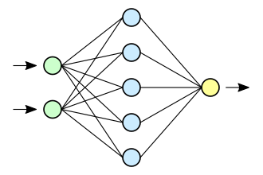

Нейронная сеть — это последовательность нейронов, соединенных между собой синапсами. Структура нейронной сети пришла в мир программирования прямиком из биологии. Благодаря такой структуре, машина обретает способность анализировать и даже запоминать различную информацию. Нейронные сети также способны не только анализировать входящую информацию, но и воспроизводить ее из своей памяти. Другими словами, нейросеть это машинная интерпретация мозга человека, в котором находятся миллионы нейронов передающих информацию в виде электрических импульсов.
Схема простой нейросети. Зелёным цветом
обозначены входные нейроны, голубым —
скрытые нейроны, жёлтым — выходной нейрон
Виды нейронных сетей
| По количеству слоёв | По направлению | Другие | |||
| Однослойная | Многослойная | Прямого распределения | Реккурентные | Радиально-базисные функции | Самоорганизующиеся карты |
| Представляет собой структуру взаимодействия нейронов, в которой сигналы со входного слоя сразу направляются на выходной слой, который, собственно говоря, не только преобразует сигнал, но и сразу же выдаёт ответ. 1-й входной слой только принимает и распределяет сигналы, а нужные вычисления происходят уже во втором слое. Входные нейроны являются объединёнными с основным слоем с помощью синапсов с разными весами, обеспечивающими качество связей. |
Здесь, помимо выходного и входного слоёв, имеются ещё несколько скрытых промежуточных слоёв. Число этих слоёв зависит от степени сложности нейронной сети. Она в большей степени напоминает структуру биологической нейронной сети. Такие виды были разработаны совсем недавно, до этого все процессы были реализованы с помощью однослойных нейронных сетей. Соответствующие решения обладают большими возможностями, если сравнивать с однослойными, ведь в процессе обработки данных каждый промежуточный слой — это промежуточный этап, на котором осуществляется обработка и распределение информации. |
В этой структуре сигнал перемещается строго по направлению от входного слоя к выходному. Движение сигнала в обратном направлении не осуществляется и в принципе невозможно. Сегодня разработки этого плана распространены широко и на сегодняшний день успешно решают задачи распознавания образов, прогнозирования и кластеризации. |
Здесь сигнал двигается и в прямом, и в обратном направлении. В итоге результат выхода способен возвращаться на вход. Выход нейрона определяется весовыми характеристиками и входными сигналами, плюс дополняется предыдущими выходами, снова вернувшимися на вход. Этим нейросетям присуща функция кратковременной памяти, на основании чего сигналы восстанавливаются и дополняются во время их обработки. |
Радиальные базисные функции предоставляют собой гибкий инструмент интерполирования при условии, что множество центров более-менее равномерно покрывает область определения искомой функции (в идеале центры должны быть равноудалены от ближайших соседей). Тем не менее, как правило в промежуточных точках аппроксимация достигает высокой точности только если множество радиальных базисных функций дополнено полиномом, ортогональным к каждой из РБФ. |
Нейронная сеть с обучением без учителя, выполняющая задачу визуализации и кластеризации. Идея сети предложена финским учёным Т. Кохоненом. Является методом проецирования многомерного пространства в пространство с более низкой размерностью (чаще всего, двумерное), применяется также для решения задач моделирования, прогнозирования, выявление наборов независимых признаков, поиска закономерностей в больших массивах данных, разработке компьютерных игр, квантизации цветов к их ограниченному числу индексов в цветовой палитре: при печати на принтере и ранее на ПК или же на приставках с дисплеем с пониженным числом цветов, для архиваторов [общего назначения] или видео-кодеков, и прч. Является одной из версий нейронных сетей Кохонена. |
Но это далеко не все варианты классификации и виды нейронных сетей. Также их делят:
- В зависимости от типов нейронов:
- однородные;
- гибридные.
- В зависимости от метода нейронных сетей по обучению:
- обучение с учителем;
- без учителя;
- с подкреплением.
- По типу входной информации нейронные сети бывают:
- аналоговые;
- двоичные;
- образные.
- По характеру настройки синапсов:
- с фиксированными связями;
- с динамическими связями.
Когда ты узнал про все виды нейронных сетей
Хронология
1943 — У. Маккалок и У. Питтс формализуют понятие нейронной сети в фундаментальной статье о логическом исчислении идей и нервной активности. В начале своего сотрудничества с Питтсом Н. Винер предлагает ему вакуумные лампы в качестве средства для реализации эквивалентов нейронных сетей.
1948 — опубликована книга Н. Винера о кибернетике. Основной идеей стало представление сложных биологических процессов математическими моделями.
1949 — Д. Хебб предлагает первый алгоритм обучения.
В 1958 Ф. Розенблатт изобретает однослойный перцептрон и демонстрирует его способность решать задачи классификации. Перцептрон использовали для распознавания образов, прогнозирования погоды. К моменту изобретения перцептрона завершилось расхождение теоретических работ Маккалока с «кибернетикой» Винера; Маккалок и его последователи вышли из состава «Кибернетического клуба».
В 1960 году Бернард Уидроу совместно со своим студентом Хоффом на основе дельта-правила (формулы Уидроу) разработали Адалин, который сразу начал использоваться для задач предсказания и адаптивного управления. Адалин был построен на базе созданных ими же (Уидроу — Хоффом) новых элементах — мемисторах.
В 1963 году в Институте проблем передачи информации АН СССР. А. П. Петровым проводится исследование задач «трудных» для перцептрона. На эту работу в области моделирования ИНС в СССР опирался М. М. Бонгарда в своей работе как «сравнительно небольшой переделкой алгоритма (перцептрона) исправить его недостатки».
В 1969 году М. Минский публикует формальное доказательство ограниченности перцептрона и показывает, что он неспособен решать некоторые задачи (проблема «чётности» и «один в блоке»), связанные с инвариантностью представлений.
В 1972 году Т. Кохонен и Дж. Андерсон независимо предлагают новый тип нейронных сетей, способных функционировать в качестве памяти.
В 1973 году Б. В. Хакимов предлагает нелинейную модель с синапсами на основе сплайнов и внедряет её для решения задач в медицине, геологии, экологии.
1974 — Пол Дж. Вербос и Галушкин А. И. одновременно изобретают алгоритм обратного распространения ошибки для обучения многослойных перцептронов.
1975 — Фукусима представляет когнитрон — самоорганизующуюся сеть, предназначенную для инвариантного распознавания образов, но это достигается только при помощи запоминания практически всех состояний образа.
1982 — Дж. Хопфилд показал, что нейронная сеть с обратными связями может представлять собой систему, минимизирующую энергию (сеть Хопфилда). Кохоненом представлены модели сети, обучающейся без учителя (нейронная сеть Кохонена), решающей задачи кластеризации, визуализации данных (самоорганизующаяся карта Кохонена) и другие задачи предварительного анализа данных.
1986 — Дэвидом И. Румельхартом, Дж. Е. Хинтоном и Рональдом Дж. Вильямсом, а так же независимо и одновременно С. И. Барцевым и В. А. Охониным переоткрыт и развит метод обратного распространения ошибки.
2007 — Джеффри Хинтоном в университете Торонто созданы алгоритмы глубокого обучения многослойных нейронных сетей. Хинтон при обучении нижних слоёв сети использовал ограниченную машину Больцмана (RBM — Restricted Boltzmann Machine). По Хинтону необходимо использовать много примеров распознаваемых образов (например, множество лиц людей на разных фонах). После обучения получается готовое быстро работающее приложение, способное решать конкретную задачу (например, осуществлять поиск лиц на изображении).